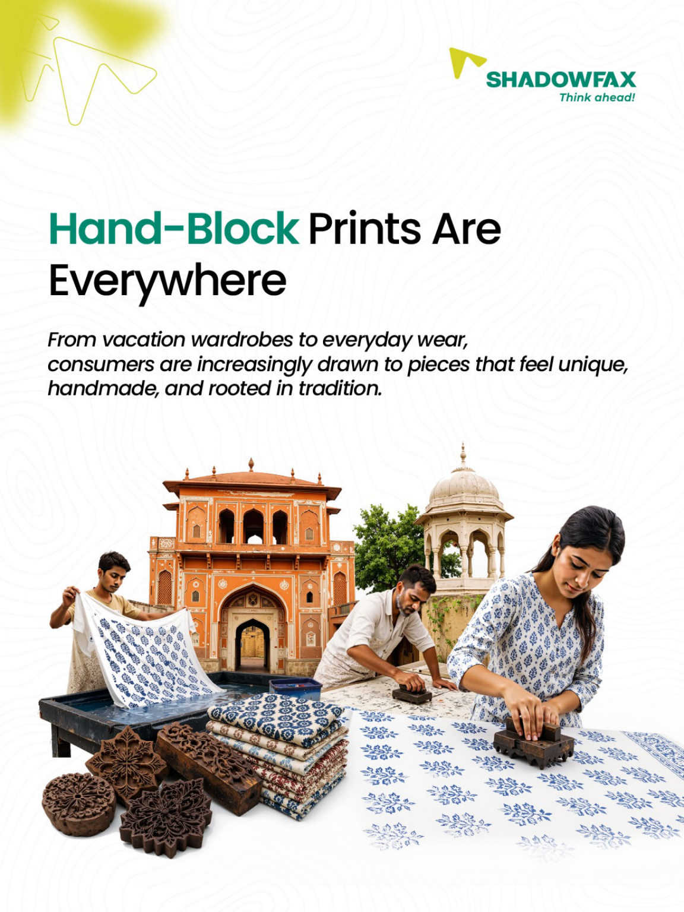
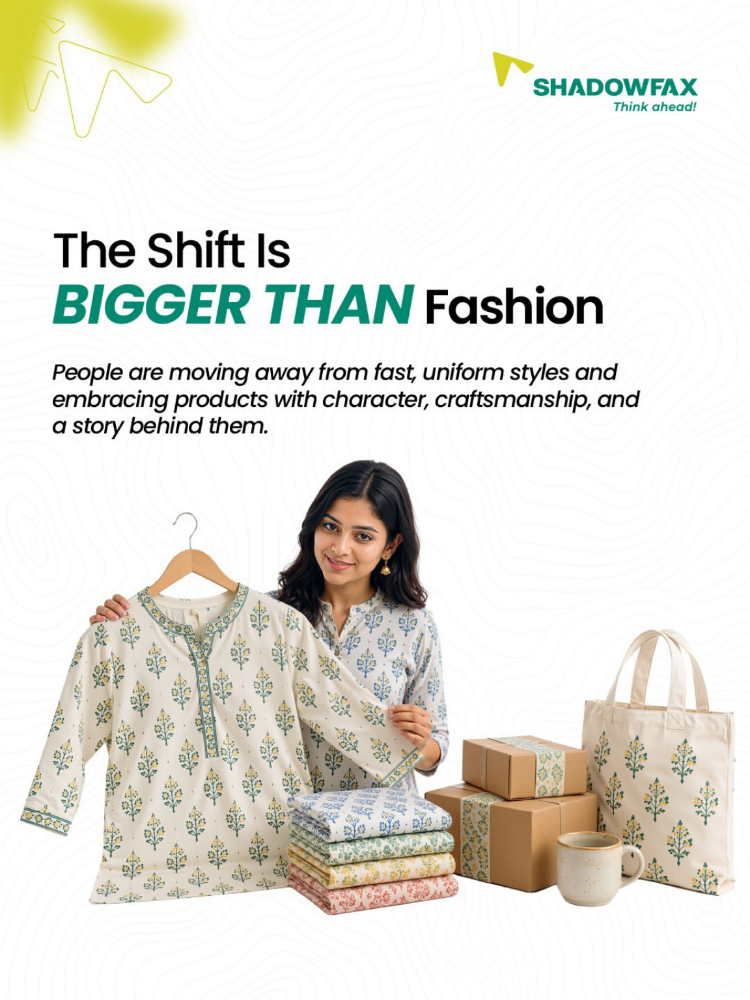
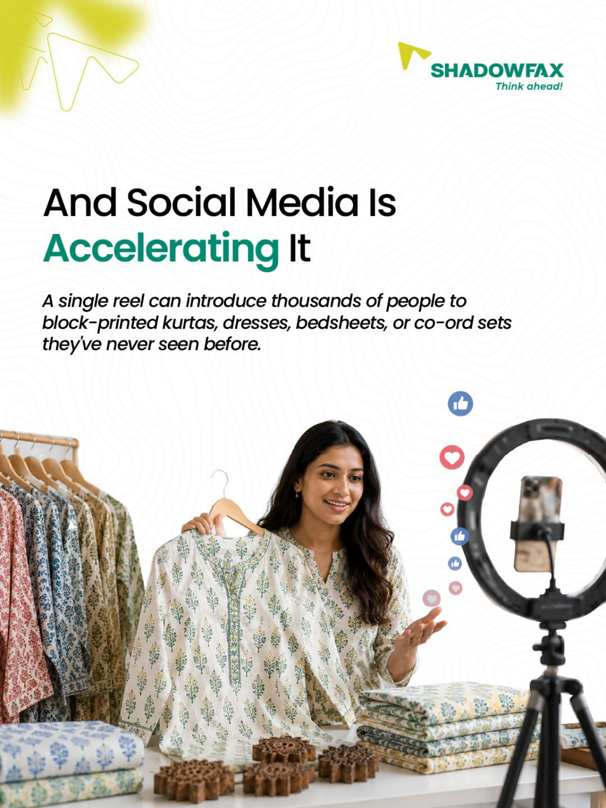
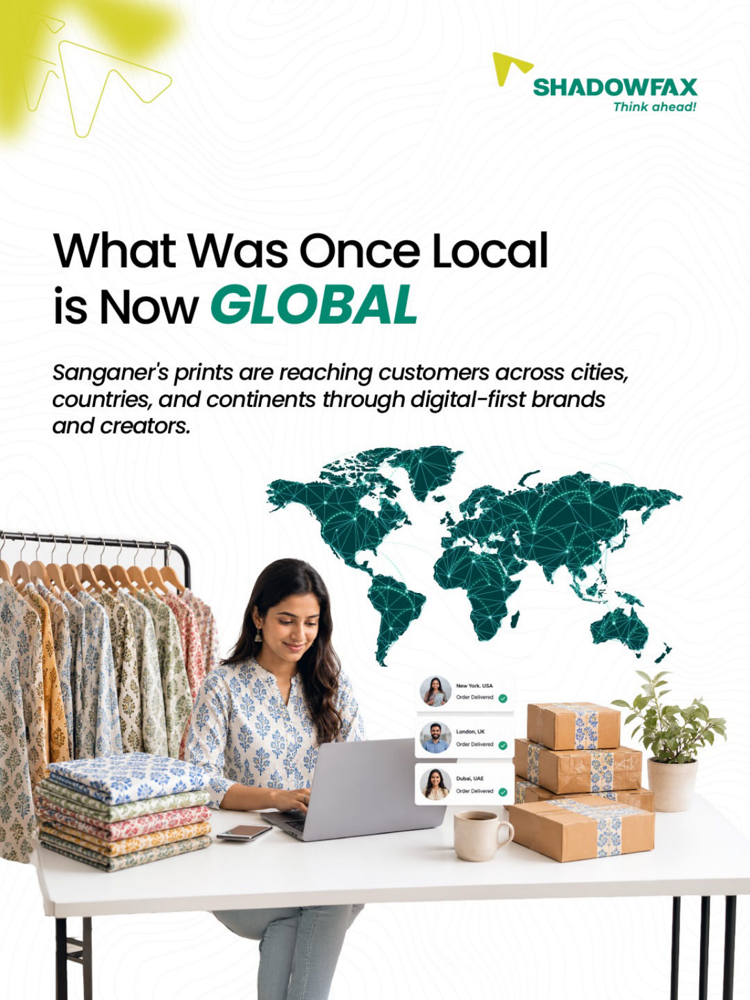
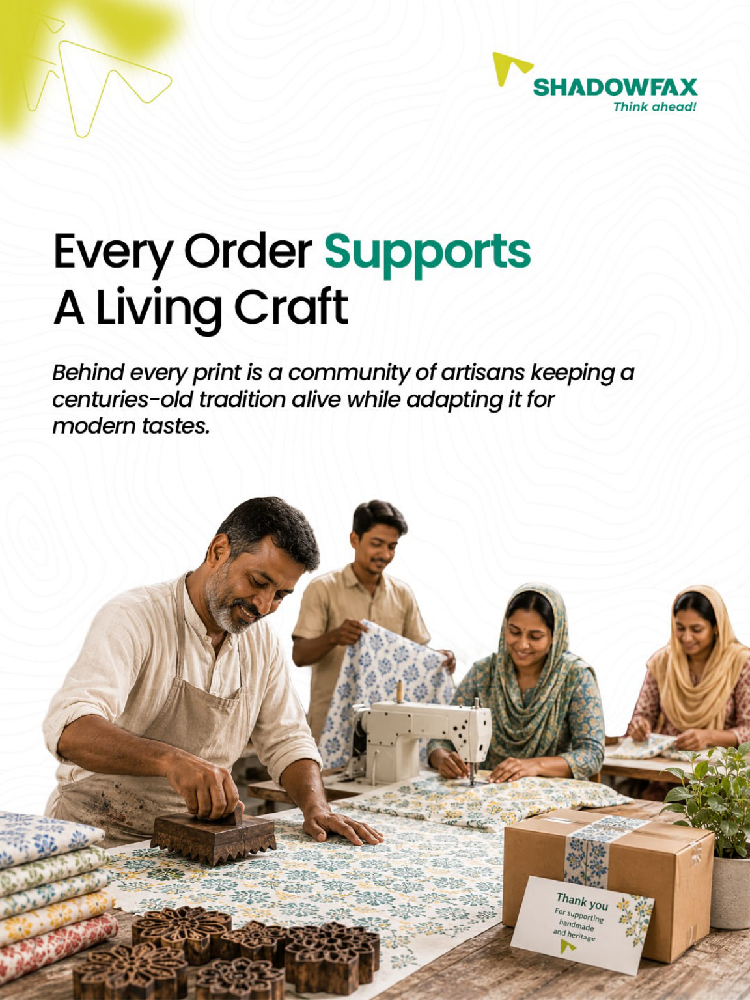
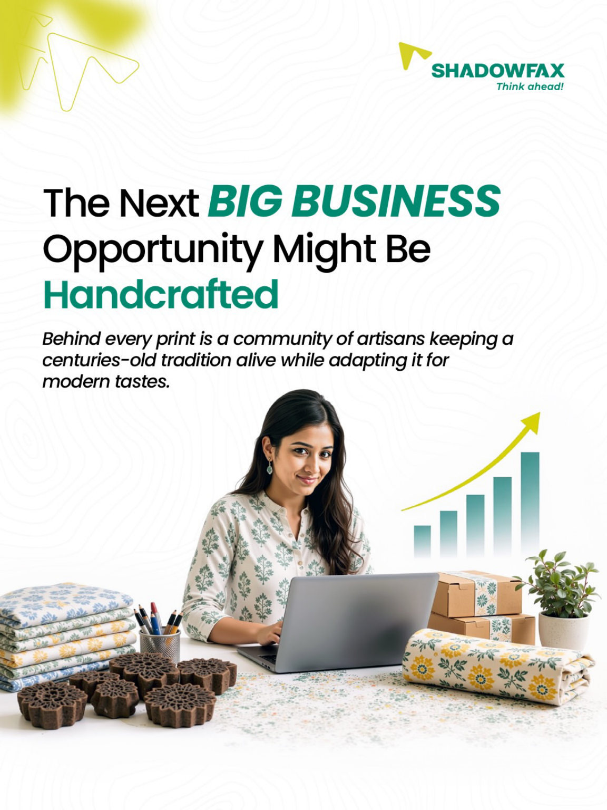

Local craft. A much wider audience.
A seven-frame visual story following Sanganer block printing from regional craft to social-commerce discovery and wider reach.
- Context
- Shadowfax
- Project type
- Editorial storytelling
- Deliverable
- 7-frame carousel
- Communication goal
- Connect local craft with wider commerce reach
Case-study scope: Final sequence + visual rationale. The supplied source files do not specify individual responsibilities, collaborators or asset provenance, so those details are not inferred here.

Brief
The story begins with Sanganer, Jaipur, and its hand-block printing tradition. It then follows the wider opportunity: customers drawn to handmade textiles, makers reaching audiences through social platforms and demand traveling beyond the craft’s place of origin.
Key decisions
The artwork pairs craft-focused photography and product imagery with airy composition, editorial headlines and Shadowfax’s green-and-yellow brand details. The result gives the artisans and textiles the visual space while the copy explains the commercial connection.
Place first
The opening frame names Sanganer and grounds the story in its hand-block printing heritage.
Show the people
Subsequent frames use artisans, textiles and creator-style photography to connect making with discovery.
Broaden the lens
The final frames move toward wider commerce opportunities while keeping the craft and its makers visible.
The full sequence.
Every frame from the supplied design is shown below in reading order. Open any image to view it at full size.





